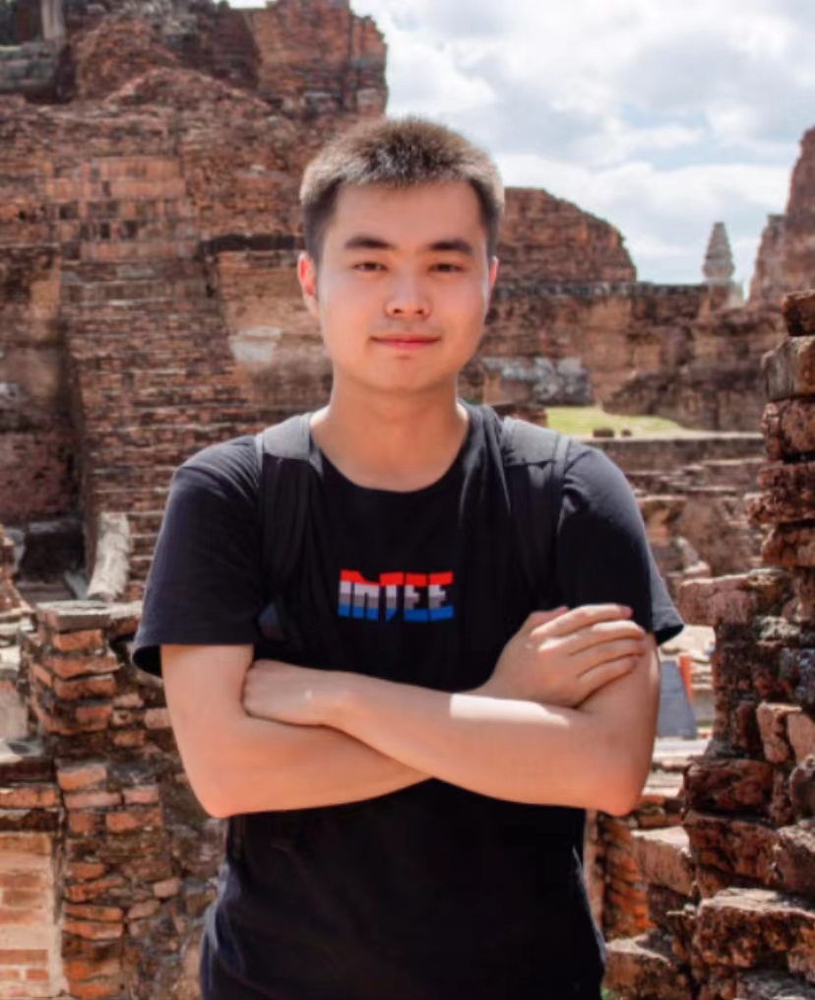

|  |
Zixiao Wang(王子啸), Ph.D. Student |
I am currently a Ph.D. student at the Department of Computer Science and Engineering, The Chinese University of Hong Kong (CUHK), under the supervision of Prof. Bei Yu since Fall 2022.
Email: zixiaowang97@qq.com
Github
Generative Model X EDA
Ph.D. Computer Science and Engineering, The Chinese University of Hong Kong, Aug 2022 - present
M.S. Computer Science and Technology, Tsinghua University, Sept 2019 - June 2022
B.S. Automation, Tsinghua University, Sept 2015 - June 2019
Full Postgraduate Studentship, CUHK, 2022-2026
Outstanding Graduate of Computer Science and Technology, THU, 2022
Qi Hang Scholarship, THU, 2019
Academician Ni Weidou, Scholarship Endowment Fund, THU, 2018
Zheng Geru Scholarship, THU, 2017
Comprehensive Scholarship, THU, 2016 2020
[C4] Yang Bai, Wenqian Zhao, Shuo Yin, Zixiao Wang, Bei Yu, “ATFormer: A Learned Performance Model with Transfer Learning Across Devices for Large-Scale Transformers”, Empirical Methods in Natural Language Processing (EMNLP), Singapore, Dec. 06–10, 2023.
[C3] Zixiao Wang*, Yunheng Shen*, Wenqian Zhao, Yang Bai, Guojin Chen, Farzan Farnia, Bei Yu, “DiffPattern: Layout Pattern Generation via Discrete Diffusion”, ACM/IEEE Design Automation Conference (DAC), San Francisco, Jul. 09–13, 2023.
[C2] Zixiao Wang, Junwu Weng, Chun Yuan, Jue Wang, “Truncate-Split-Contrast: A Framework for Learning from Mislabeled Videos”, Thirty-Seventh AAAI Conference on Artificial Intelligence (AAAI, Oral), Feb. 7–14, 2023.
[C1] Haijin Ding, Zixiao Wang, Rebing Wu, “Enhancing the security of multi-agent networked control systems using QKD based homomorphic encryption”, IEEE Conference on Decision and Control (CDC), Dec. 17-19, 2018.
[J1] Yang Bai, Xufeng Yao, Qi Sun, Wenqian Zhao, Shixin Chen, Zixiao Wang, Bei Yu, “GTCO: Graph and Tensor Co-Design for Transformer-based Image Recognition on Tensor Cores”, accepted by IEEE Transactions on Computer-Aided Design of Integrated Circuits and Systems (TCAD).
Research Intern, Tencent AI Lab, Shenzhen, China, 2020.10-2022.08
Research Intern, UBTECH Robotics, Beijing, China, 2017.09-2018.08
ENGG2760A, 2023-R1, Probability for Engineers
CSCI5030, 2022-R2, Machine Learning Theory
ENGG2020, 2022-R1, Digital Logic and Systems